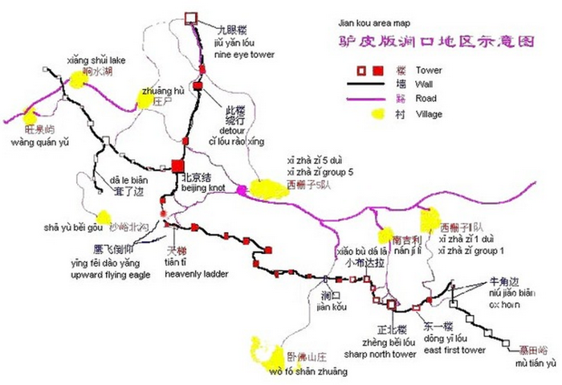

Important Info for Members Already Signed-up
Safety
The author, I, have not been there, though there has been phone calls and chats with locals and extensive research.
We shall stay away from the dangerous areas and never hike in the dark. The trip shall be canceled in case of a sand storm or rain. Breath-taking views have tempted many people to go totally nuts, climbing the 80 degree cliff without any preparation or straying away from the well-established route without local guides. My bleakest estimation based on Google's news results shows one rescue mission per month and four deaths per year. A research paper by an NGO says there were 6 accidents and one death in 2010.
Nobody shall be allowed to go nuts during the hike. As we see fit, local guides may be a great option for some safe but unexplored area, at an acceptable rate of 200 yuan for 3 hours. If one of us feel challenged on Day 1, we'll have a guide accompany us to Mutianyu, for ¥300 in total.
Nobody in our group shall be held responsible for any other person's safety issues and accidents, except that we'll split the guide fee if one of us feels challenged and we'll adjust schedule because of one member's safety concerns.
Route
The route overview can be seen below. We'll rely on local guesthouse owners for the specifics of the tracks and campsite location, and safety issues related with each of them.
Gathering Location
Yungho King Dongzhimen， 永和大王东直门店，9 am
What to Prepare
Tent, sleeping bag, etc. You could rent all those online; they cost no more than ¥80 per person.
Hiking shoes, sneakers with good grip; clothings that protect you from thorns and scratchy plants on the trail, and the cold weather on top of the wall; warm socks; gloves if you're into photography
Travel insurance.
Cash: ¥400 suggested
Sports drink, or coconut water, 2L of water in total
Meals for Saturday night and Sunday morning, energy bars, chocolate
Suncream, sun glasses, hat with broad brims
Toilet paper and tissues
Personal Medicine and First-aid kit
Cell phone, charger, download all the maps found here
Get familiar with the map
Jiankou-Mutianyu Hiking Plan Apr 25 to Apr 26
One-way transport time: 3.5 hours
Total hiking time: about 6 hours
Total spending: ¥100 to ¥200 per person
Date and Time
Depart from Dongzhimen: 9 am
Back to Dongzhimen: 2 pm next day
Transport
Dongzhimen Transport Hub to Huairou: Bus 916, ¥4.8(with transit card），or, ¥13
Huairou to Xi Zha Zi village: Bus 862 to Yujiayuan Station, Bus H25 to Xi Zha Zi, ¥4 with card, or ¥10
Mutianyu to Huairou: taxi, ¥25 per person
Huairou to Dongzhimen: Bus 916, ¥4.8(with transit card), or ¥13
Saturday Lunch at Zhaoshi Shan Zhuang, or Zhao's Villa
This villa has been the most famous among professional photographers. Mr. Zhao, the owner of the villa, will advise on campsite and more interesting routes to explore after the lunch. We'll go to another guesthouse in case he's totally booked; see "Plan B" section at the bottom.
Route Overview
Return Track
Locate Sharp North Tower in this map. It's located at the east edge of Jiankou section. On Day 2, we'll head east and follow the wall to the gate of Mutianyu, taking the shortcut of ox horn, for 2.5 hours; and that's for sure. I found absolutely no accident associated with this track; and this is the one-day track recommended by WikiTravel and Lonely Planet.
Exploration Track
Note that a square represents a tower. Six towers to the east of Sharp North Tower is Jiankou, namesake for the whole section. The track is well established yet risky.
You could easily find the biggest red square, Beijing Knot. Beijing Knot（Beijing Jie， 北京节）splits the entire Great Wall into three parts. The Wall originates from Shanhai Pass (Shanhai Guan, 山海关), near the sea. From the sea to Beijing Knot, there's only one wall; however, from Beijing Knot to the west, there're actually two, the inner Great Wall ending in Shanxi, the outer Wall, ie, the Wall, ending in Gansu.
To my knowledge, all Jiankou accidents in recent news happen on the walls adjacent to this point.The wall from Beijing Knot to the first tower in the North has almost collapsed; the most notorious and deadly 80 degree cliff also stood nearby. There're easier and safe tracks for detour or staight from village up to certain towers.
North of Beijing Knot is a beautiful section of inner Great Wall, with fantastic view of both Beijing and the astounding views of Beijing Knot. Sunrise and sunset won't hide behind mountains. That's the ideal campsite. Yet the Day 2 walk from here to Sharp North Tower might be too boring.
As said, the detailed route shall be decided after we've arrived; the locals will know the tracks best.
Resources for Our Group
If you'd like to spread some of these copyrighted materials, use the original source. Thanks.
Why the Route
Jiankou Great Wall
Lonely Planet China described this section as "stupefyingly gorgeous", "incomparable" and "sublime", with "tantalizing panoramic views of the Great Wall". See Jiankou's photos here. You'll understand why.
Mutianyu Great Wall
The steepest of Badaling, Juyongguan, and other restored sections
Best reviewed Beijing attraction on Foursquare.com
Plan by Beijing Hikers
This premium hiking agency will have their own Jiankou event on Apr 25, the Saturday. Please read their plan and packing guide and FAQ. They have great packing suggestion and hiking statitics, which may serve as our reference. They're mentioned here because their site aided my plan by a great deal.
Weather Forecast
The Weather Channel's ten day forecastWikiTravel
Hike from Jiankou to Mutianyu This hike starts in Xi Zha Zi village (village fee: ¥20 as of Feb 2014), at the foot of Jiankou Great Wall section. After buying the tickets take the first road left (Yi Dui - there should be staff around, who can confirm, that this is Yi Dui). Follow the road for a bit, until you see a blue sign to your left, saying this part of the Great Wall is closed. Take the path on the right of it (follow the red arrow! Do not take the left path, even though it is "a narrow dirt path" as mentioned in the Lonely Planet guide-book.) There will be more red arrows and dots along the way, eventually leading you to the Great Wall (Feb. 2014). You walk about a hour in medium-rough terrain where you will encounter some local villagers' ladders which you will have to use in order to climb the wall (¥5, none of those in Feb. 2014). After arriving at the Great Wall, head left (east) towards Mutianyu, a hike that will take you about 2-3 hours. The first 1,5 hours is on the unrestored area of the wall, the rest on the restored area. Add 0,5-1 hour if you choose to walk the Ox Horn, which is a more rough part of the wall (you can also skip it by following the signs). The hike can be done in sneakers, but hiking shoes would be a much better choice. Don't try to do the hike when it's wet, because it has some very (!) steep and slippery parts. While it would be totally possible to do the hike the other way round (from Mutianyu to Jiankou), finding transportation (probably back to Huairou) would be much harder to find.
Source: WikiTravel: Great Wall of China
Lonely Planet China Travel Guide, published in May 2013
Jiankou For stupefyingly gorgeous hikes along perhaps Beijing’s most incomparable section of ‘wild wall’, head to the rear section of the Jiankou Great Wall ( Hou Jiankou Changcheng; admission ¥20) , accessible from the town of Huairou. Tantalising panoramic views of the Great Wall spread out in either direction from here, as the crumbling brickwork meanders dramatically along a mountain ridge; the setting is truly sublime. But this is completely unrestored wall, so it is both dangerous and, strictly speaking, illegal to hike along it. Make sure you wear footwear with very good grips, and never attempt to traverse this section in the rain, particularly during thunderstorms. When the weather is fine, though, the Jiankou area offers fabulous opportunities to hike and camp along the wall. From the drop off at Xizhazi Village (;Xizhazi Cun), it’s a one-hour walk uphill to the wall, along a narrow dirt path, which climbs through a beautiful pine forest. From here turn east (left) to hike all the way to Mutianyu (two hours), from where you can easily pick up transport back to Huairou, or even to Beijing. Note, there are different parts, or dui () to Xizhazi Village. All have paths that lead up to the wall, but for the sake of ease, head to the first part of the village (; yi dui), which is down a lane to your left immediately after the ticket office.
Sleeping & Eating
The following are friendly but basic, have no English signs, and no English is spoken.
Jiankou Changcheng Nongjiayuan GUESTHOUSE $ ( 6161 1794, 136 9307 0117; r ¥80- 100; ) The first nongjiayuan (farmers- style courtyard) you come to as you enter Xizhazi Village, rooms here are set around a vegetable-patch courtyard, and are simple, but have private bathrooms. Does food.
Guohuai Dayuan GUESTHOUSE $ ( 137 1698 2205, 136 2136 2662; r ¥80- 120; ) Further into the village, this place has similarly clean but simple rooms. Meals here cost a set-price ¥30.
Getting to Jiankou As with getting to Mutianyu, take bus 916 from the Dongzhimen transport hub.(; Dongzhimen shuniuzhan) to Huairou (¥12, one hour, 6.30am to 7.30pm). Get off at Mingzhu Guangchang () bus stop, then start negotiating for a taxi to Xizhazi Village (; Xizhazi Cun; one- way ¥100- 130, one hour).
Source: Lonely Planet China Travel Guide The second part of "If you Like" section
Plan B
Huairou to Xi Zha Zi village option B: black taxi, ¥150 per taxi
Transport Plan C: rent a bus for two days, 10
Lunch Location Plan B: Xiangqu Nongjiayuan(Xiangqu Guesthouse), with Mr. Yang,15910449077
Accomodation Option B: Villagers will carry camping supplies to our camping site before sunset. ¥ 100 maximum per person.
Accomodation Option C: We go down the Great Wall, spend a night in a guesthouse, and hike to Mutianyu next morning. Price ranges from 30 for a bed to 100 for a room.